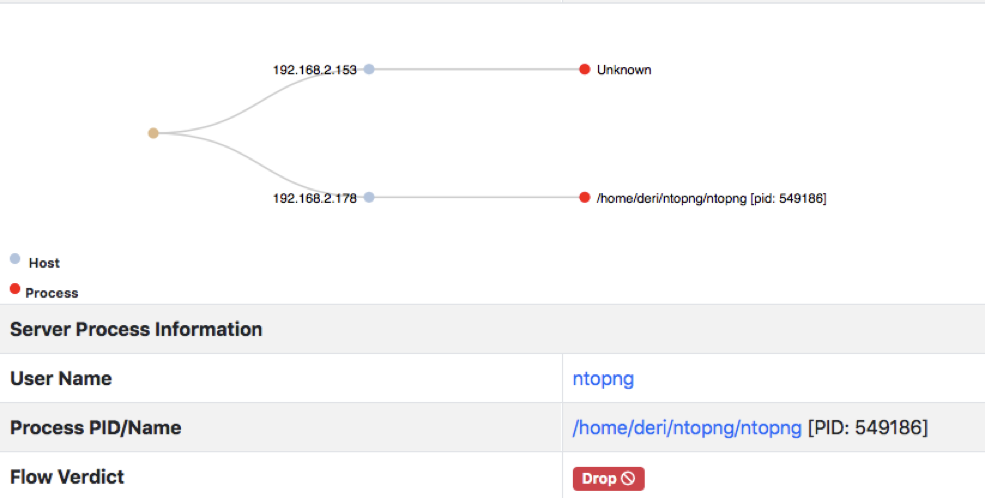
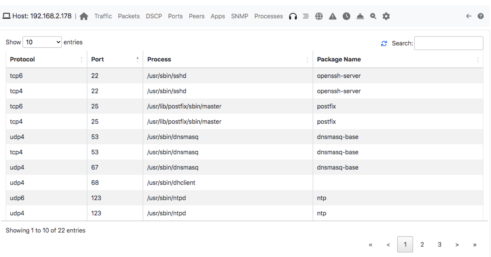

Поддержка режима агента в nProbe
nProbe теперь поддерживает интеграцию с операционной системой Windows и Linux (на базе eBPF). Это означает, что помимо захвата пакетов nProbe теперь может сообщать дополнительную информацию о пользователях и процессах, выполнивших определенную сетевую активность.
Режим агента включен, добавление –режим агента в командную строку nProbe (требуется лицензия Enterprise M) в операционных системах Linux и Windows.
По сути, теперь у нас есть дополнительные информационные элементы:
[57640][Len 4] %SRC_PROC_PID Flow source proc PID
[57641][Len 16] %SRC_PROC_NAME Flow source proc name
[57897][Len 4] %SRC_PROC_UID Flow source proc userId
[57844][Len 16] %SRC_PROC_USER_NAME Flow source proc user name
[58012][Len 16] %SRC_PROC_PKG_NAME Flow source proc package name
[58028][Len 32] %SRC_PROC_CMDLINE Flow source proc cmdline args
[58030][Len 16] %SRC_PROC_CONTAINER_ID Flow source proc containerId
[57846][Len 16] %SRC_FATHER_PROC_NAME Flow src father proc name
[58036][Len 4] %SRC_FATHER_PROC_UID Flow src father proc UID
[57845][Len 4] %SRC_FATHER_PROC_PID Flow source father proc PID
[58037][Len 16] %SRC_FATHER_PROC_USER_NAME Flow src father proc UID name
[58033][Len 16] %SRC_FATHER_PROC_PKG_NAME Flow src father proc package name
[57847][Len 4] %DST_PROC_PID Flow dest proc PID
[57848][Len 16] %DST_PROC_NAME Flow dest proc name
[57898][Len 4] %DST_PROC_UID Flow dest proc userId
[57849][Len 16] %DST_PROC_USER_NAME Flow dest proc user name
[58013][Len 16] %DST_PROC_PKG_NAME Flow dest proc package name
[58029][Len 32] %DST_PROC_CMDLINE Flow dest proc cmdline args
[58031][Len 16] %DST_PROC_CONTAINER_ID Flow dest proc containerId
[57850][Len 4] %DST_FATHER_PROC_PID Flow dest father proc PID
[57851][Len 16] %DST_FATHER_PROC_NAME Flow dest father proc name
[58039][Len 4] %DST_FATHER_PROC_UID Flow dst father proc UID
[58040][Len 16] %DST_FATHER_PROC_USER_NAME Flow dst father proc UID name
[58035][Len 16] %DST_FATHER_PROC_PKG_NAME Flow dst father proc package name
Интеграция с ntopng
Интеграция с ntopn осуществляется легко через ZMQ. Пример:
nprobe -i eno1 --zmq tcp://127.0.0.1:1234 --agent-mode
ntopng -i tcp://127.0.0.1:1234
Внутри ntopng вы можете отображать информацию о процессе в представлении потока.

также узнайте список открытых портов на хосте, на котором работает nProbe:
